Proposta Interiorisme
Visualització 3D de la reforma integral
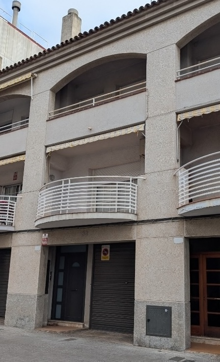

Façana i Accessibilitat Urbanística
S'aplica un criteri de zero barreres arquitectòniques, eliminant qualsevol esglaó a l'accés principal per enrasar el nivell del vestíbol amb el paviment del carrer. A la planta primera (P1), s'optimitza la fusteria passant a un disseny de dues fulles, aportant més netedat visual a la composició.
L'estratègia cromàtica final es defineix en tres tons per a un degradat equilibrat:
Estudi de Façana: Variants de Planta Baixa (PB)
Comparativa per decidir el nivell d'integració de la fusteria a la cota carrer. La variant "All White" unifica tota la fusteria del projecte.
Manté les portes de la PB en contrast (RAL 7021). Ofereix una base visualment més sòlida.
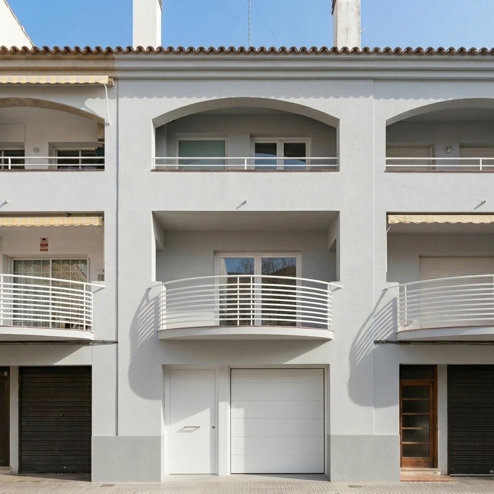
Unifica tota la fusteria en Blanc Pur (RAL 9016). Màxima lleugeresa i integració total.
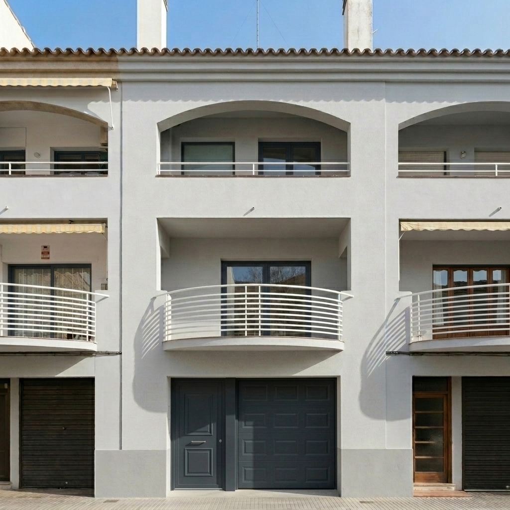
Tota la fusteria (P1, P2 i PB) unificada en gris fosc RAL 7021. Estètica industrial contemporània.
- RAL 9016 (Blanc Pur): Cos principal de la façana (estuc llis).
- NCS S 1502-Y50R (Sorra): Sòcol de la planta baixa (continuïtat amb l'interior).
- RAL 7021 (Gris Negre): Fusteries i accessos (segons variant triada).
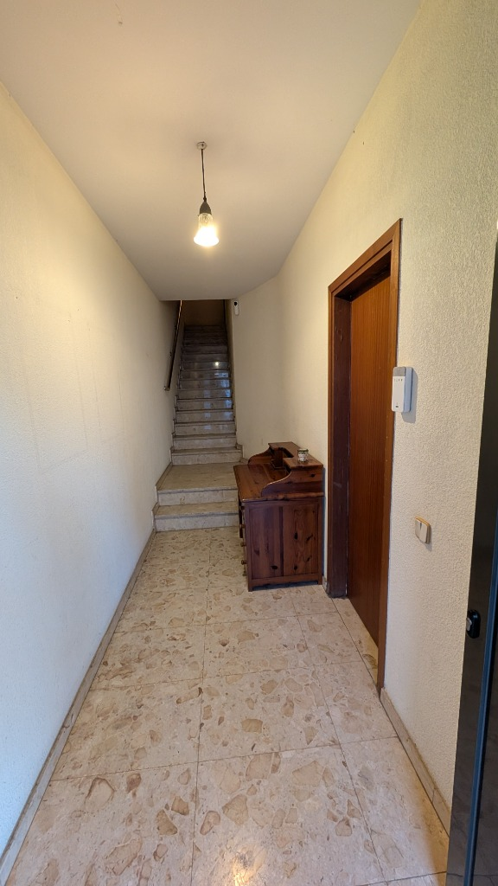
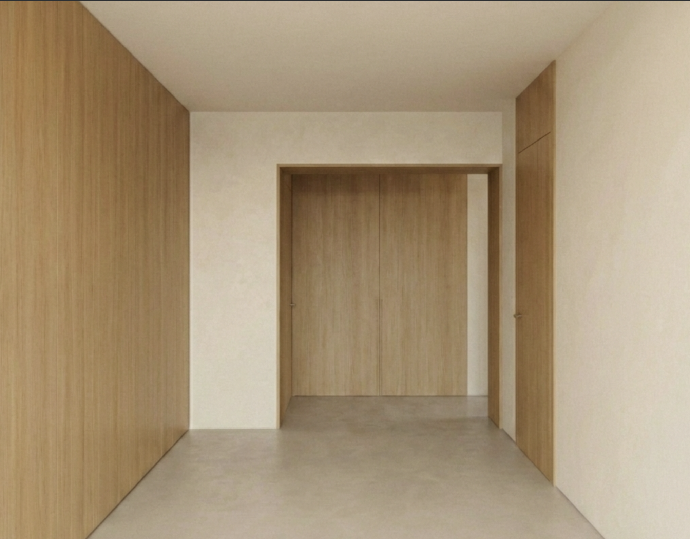

Vestíbul d'entrada
Recuperació i consolidació de la paret de pedra original com a testimoni històric, contrastada amb un banc suspès minimalista i il·luminació indirecta que emfatitza la textura del mur.
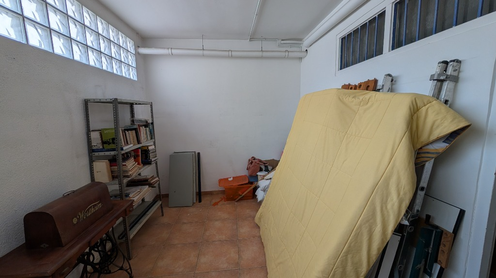


Estudi (PB)
Espai de treball a cota zero amb paviment de **gres porcelànic XL (Sorra)**. Dissenyat com un espai híbrid que pot evolucionar cap a un dormitori accessible (ex: habitatge per a cuidador/a) a mig termini.
Les instal·lacions elèctriques i de dades s'han pre-calculat per permetre la col·locació de TV i llit sense necessitat d'obres, mantenint la connexió visual directa amb l'oasi bioclimàtic.


Oasi Bioclimàtic
El pati interior actua com un regulador tèrmic natural per a tota la casa. El paviment es resol amb un llit de pedretes fines grises del Garraf juntament amb unes lloses planes per permetre el pas, potenciant el drenatge i l'estètica natural. S'instal·len enfiladisses mediterrànies sobre una estructura de cables d'acer i un sistema de reg per degoteig completament ocult.


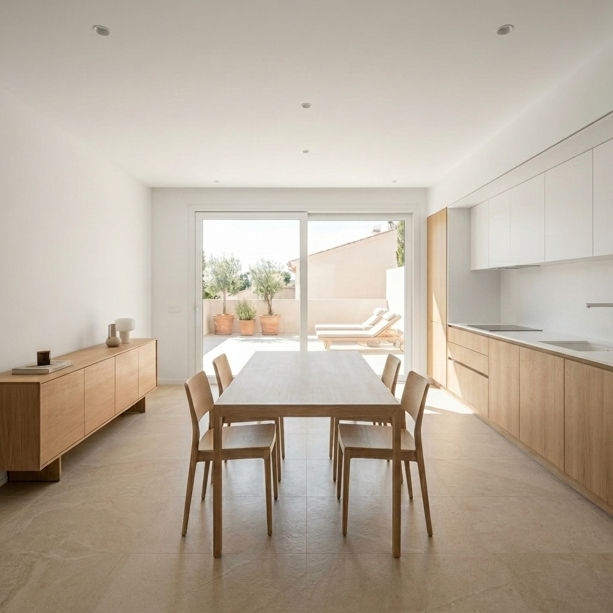
Cuina - Menjador
Espai diàfan optimitzat sota el criteri White, Oak & Sand. S'ha reordenat la zona de columnes: el mòdul del forn es desplaça a la posició original de la nevera, mentre que l'antic lloc del forn s'allibera amb prestatges oberts de roure en angle de 40 cm. La nevera s'ubica ara al costat de la porta de la terrassa per millorar la funcionalitat.
El paviment de gres sorra (NCS S 1502-Y50R) unifica tot l'ambient amb les terrasses del P1, mentre que les parets en Blanc Pur (RAL 9016) potencien la lluminositat i el contrast amb la fusta de roure clar.
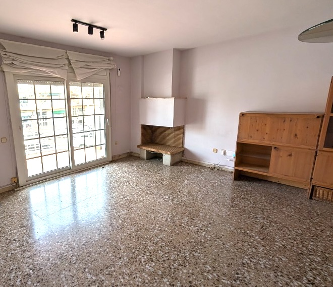
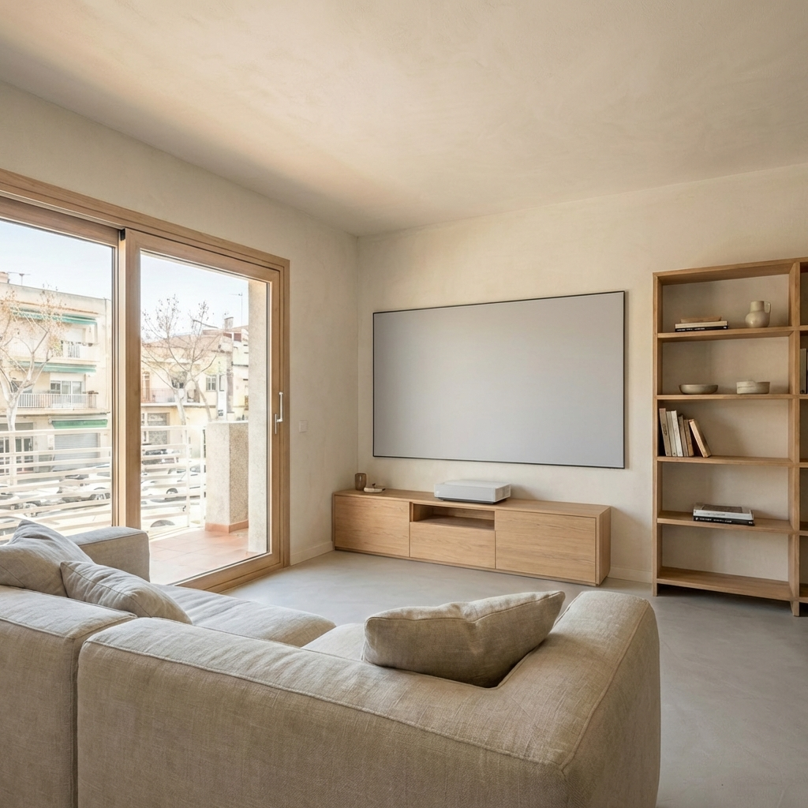

Atmosferes
Configuració artística mitjançant la il·luminació programable i el Laser TV amb pantalla ALR.
Sala d'estar (P1)
Espai central dissenyat sota el concepte Cozy Minimalism, on predomina la calidesa de la fusta de roure i la continuïtat del paviment gres sorra (NCS S 1502-Y50R). S'integra un sistema de Laser TV d'última generació amb pantalla ALR, que permet una experiència cinematogràfica sense trencar la puresa visual de les parets en Blanc Pur (RAL 9016).

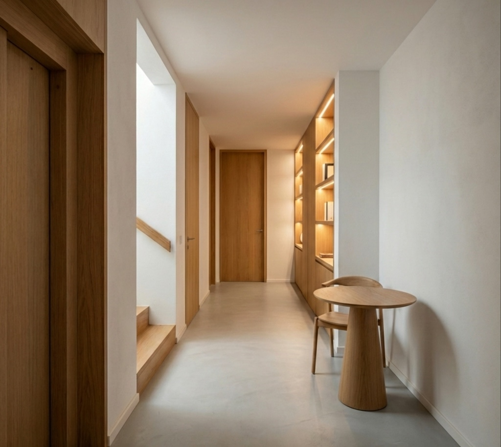

Biblioteca i distribuïdor (P2)
Zona de transició convertida en un espai de lectura serè. S'aprofita la llum zenital per emfatitzar les estanteries enrasades de roure RSM i el paviment continu en to sorra. La integració de l'ascensor en color blanc unifica visualment la planta superior, mantenint la coherència amb el RAL 9016 de les fusteries.

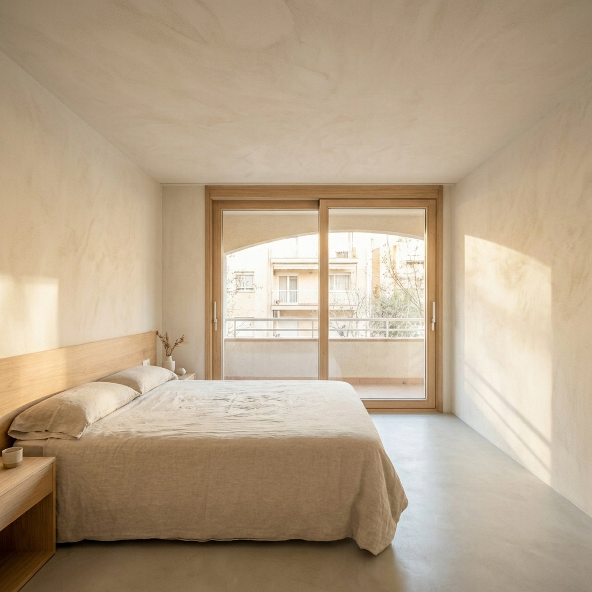

Variants de Personalització
Exploració cromàtica i d'atmosferes per a la suite principal.


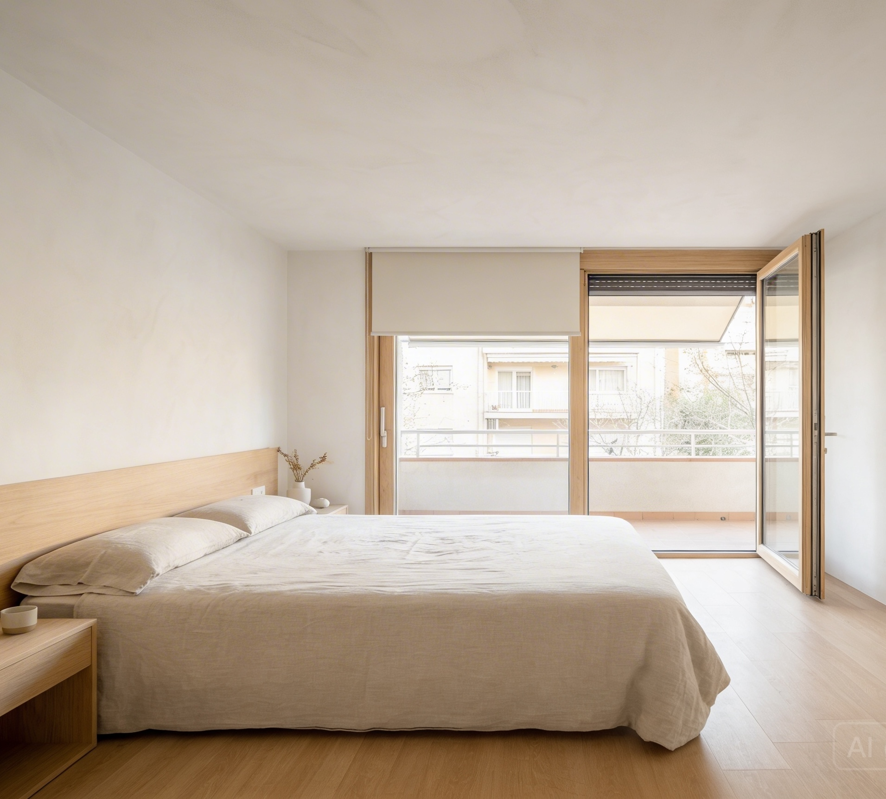
Dormitori 2 (Principal)
Habitació orientada al descans, lliure d'elements tecnològics visius. S'aplica l'estratègia White, Oak & Sand, utilitzant el paviment de gres sorra i mobiliari a mida de roure clar per crear una atmosfera de puresa i calidesa natural.

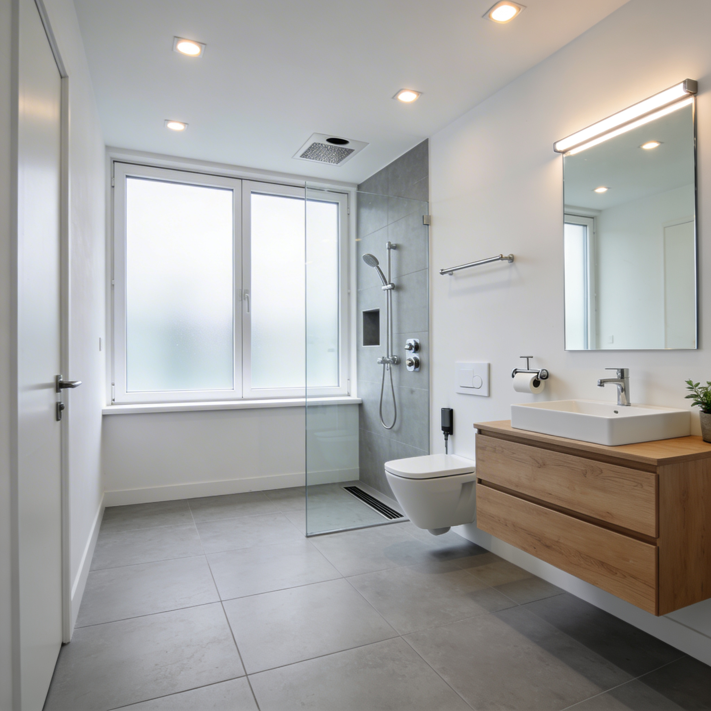

Bany Principal (PE)
Espai d'higiene minimalista amb moble de lavabo en fusta de roure clar de gra suau. S'integra una dutxa walk-in sense barreres amb plat blanc enrasat. Tota la griferia és encastada (monocomandament a la paret i ruixador al sostre) per eliminar elements visuals superflus. La il·luminació natural es maximitza mitjançant una finestra fixa rectangular fins a la meitat de la paret amb vidre translúcid.
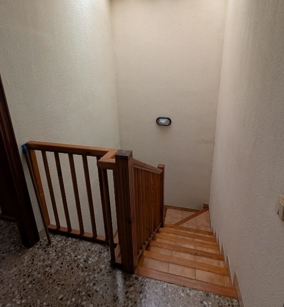

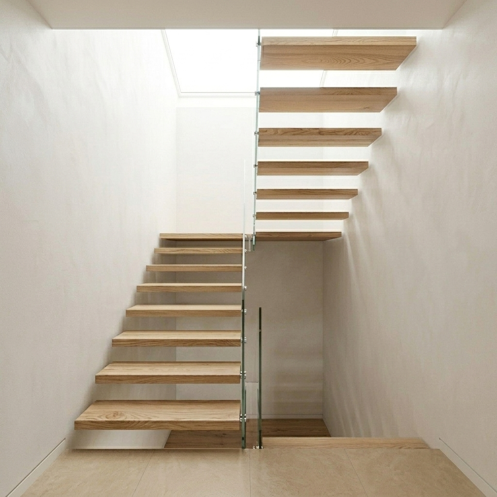

Escala i nuclis verticals
L'escala es consolida com l'eix de fusta que vertebra la casa. A la Planta 1, l'ascensor s'integra amb tancaments en Roure RSM, mentre que a la Planta 2 s'elimina la barana opaca per un disseny de cables d'acer i passamans ergonòmics de fusta clara que aporten seguretat i transparència.
S'ha previst il·luminació LED integrada en els esglaons per guiar el recorregut nocturn, mantenint el contrast suau entre el blanc pur dels paraments i la calidesa del roure.